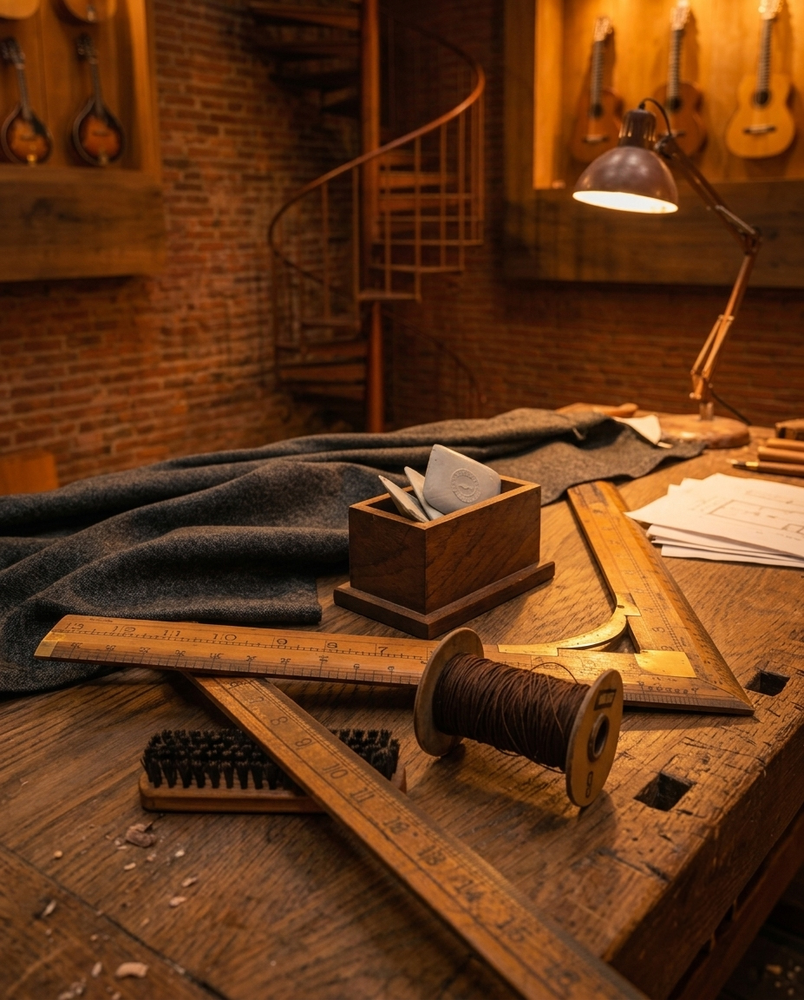
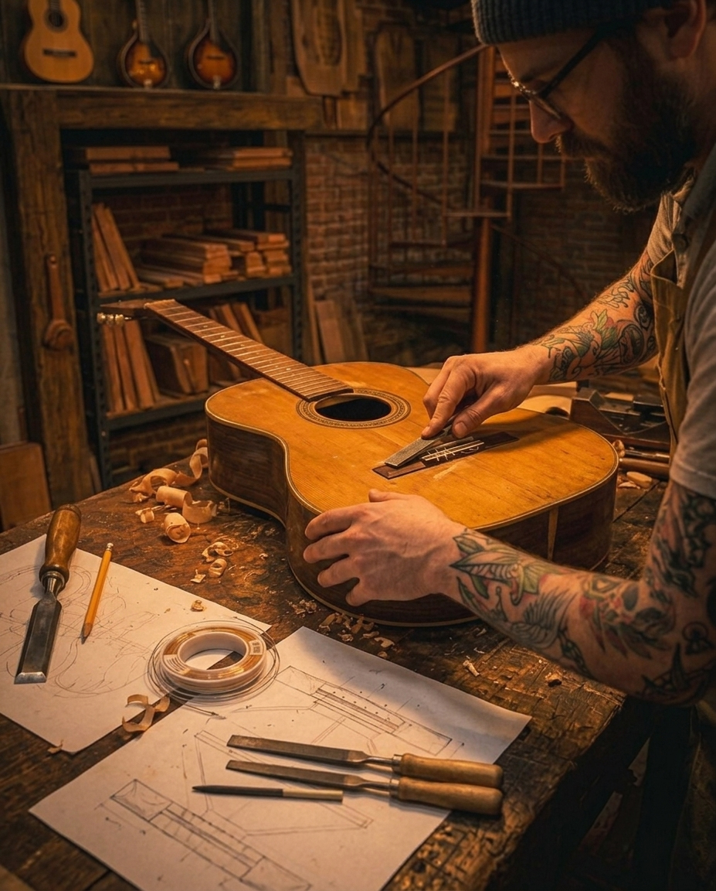
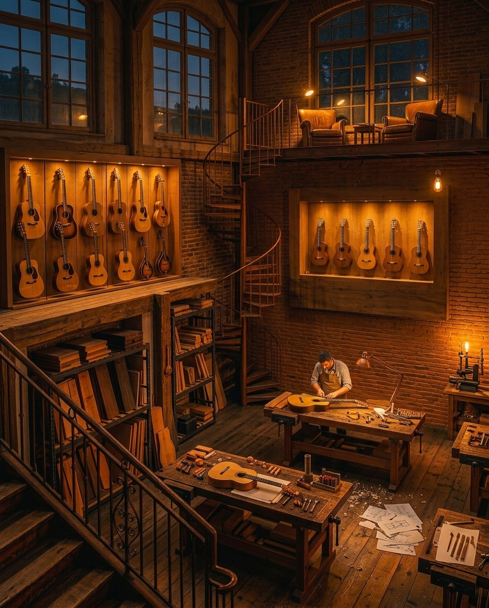
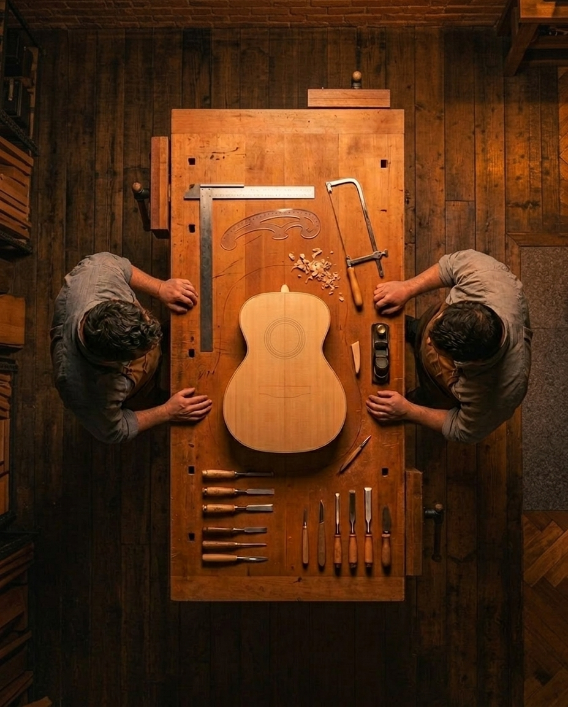
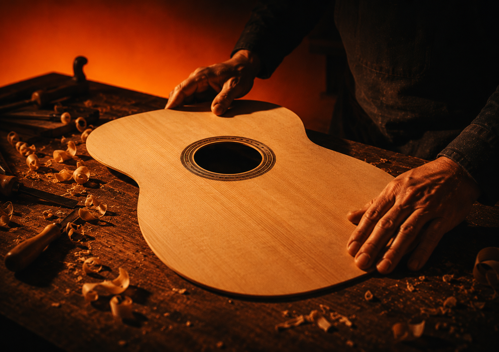

01
Herramientas
Precisión artesanal en cada detalle.

En nuestro taller aprendés el oficio construyendo tu propio instrumento junto a luthiers profesionales.

Precisión artesanal en cada detalle.

Cada guitarra comienza con paciencia.

El espacio donde nace el instrumento.

Tiempo, precisión y oficio.
Transmitimos años de oficio, herramientas reales y procesos que convierten la curiosidad en conocimiento aplicado.
Conocé nuestros cursosFormando personas y construyendo instrumentos con métodos artesanales.
Aprendés trabajando directamente sobre materiales, herramientas e instrumentos.
Seguimiento personalizado durante todo el proceso.
Personas que comenzaron desde cero y hoy crean.
Aprendé las técnicas de lijado, sellado y terminado aplicadas a instrumentos de cuerda.
Construí tu propia guitarra desde cero. Desde el diseño y la selección de maderas hasta el armado final.
Técnicas y criterios para la reparación y puesta en valor de cada uno de los instrumentos.
Descubrí cómo cada pieza influye en el sonido, la respuesta y la personalidad del instrumento.

Cada guitarra nace de una selección minuciosa de maderas y procesos artesanales. No hay dos instrumentos iguales: cada uno lleva la marca de quien lo construyó.
Maderas elegidas por su estabilidad, resonancia y calidad estructural.
Aprendé a crear un mástil cómodo, resistente y preciso.
Ajustes que mejoran la afinación, comodidad y respuesta del instrumento.
Técnicas de lijado, tintes y protección para un resultado profesional.
Tocá cada material para descubrir su rol dentro de la guitarra.
Su baja densidad permite una gran vibración y una excelente proyección sonora.
Aporta cuerpo al sonido y un excelente equilibrio entre graves y agudos.
Su rigidez mejora la estabilidad y transmite las vibraciones con precisión.
Su gran dureza soporta el desgaste constante y mejora la sensación al tocar.
Un proceso colectivo en el cual es construido con tiempo, precisión y oficio artesanal.